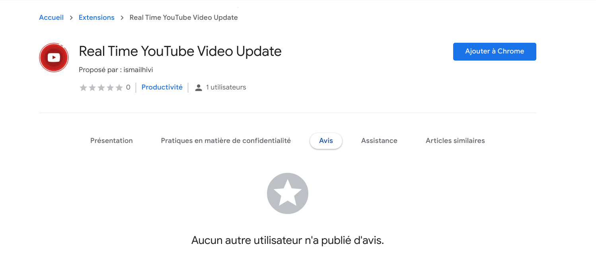

Mes compétences personnelles
Languages et frameworks
- Java
- C
- Javascript
- Python
- HTML/css
- SQL
Softwares et platforms
- Android Studio
- Visual Studio
Compétences
- Software architectures
- Scraping
- DATA extraction
- Automation
- chrome extensions development
MY WORKS
Je faisais partie de certaines collaborations et j'ai travaillé seul sur divers projets différents.
Voici une liste de mes favoris!
Debump

Ce projet a été créé pour les vendeurs qui utilisent la plate-forme de Depop.com pour vendre leurs produits. Le projet était une extension chromée faite pour l'un de mes clients en upwwork. L'extension a une implémentation de paiement pour les abonnements mensuels avec un Trail gratuit de nouveaux utilisateurs.
Top Youtube commentor

Ceci est un projet créé comme premier extracteur de données pour de grandes quantités de données. Ce projet a pour objectif d'extraire tous les commentaires pour une chaîne YouTube spécifique avec toutes les métadonnées pour chaque commentaire. Ce projet utilise YouTube API 3 pour revenir aux données de YouTube à l'aide d'Axios Libaray, puis enregistrez toutes les données d'un canal YouTube spécifique dans la base de données SQLITE, puis analysez ces données pour revenir des informations complètes sur le nombre de commentaires, des goûts, des gouttes et des réponses. Trier tous les résultats par l'une de ces crétières
Kalah

Une application codée au cours de S1 en Enseas. Fondamentalement, c'est un jeu simple développé en utilisant C et SDL2 Libaray.Le code est disponible sur Github's Binome.
Youtube real time info update

Lien avec elle dans le magasin chromé
Ma première extension chromée publiée. Cette extension chromée est capable de mettre à jour toutes les informations YouTube à chaque instant (nombre de goûts N'ÉMANKS NUMBER ABLIPBIRES) afin que vous puissiez combien vous pouvez regarder la même vidéo que vous regardez dans le même temps. Vous pouvez observer comment le nombre de montres augmente pendant que vous regardez une vidéo no YouTube. Cette extension Chrome utilise YouTube API 3 pour revenir sur les données.
Faits amusants!
- Je continue de pratiquer CP pour conserver mes compétences de codage polies.
- Je suis amusant de japaniser manga et anime
- J'ai regardé toute la grande série anime et je regarde encore certains d'entre eux.
- J'avais l'habitude de faire dropshipping, cette expérience m'a aidé à obtenir l'une de mes premières indépendantes
Quelque nombre et mon objectif
Tout ce que je veux, c'est utiliser mes attitudes naturelles pour améliorer un peu de monde. Les travaux et les ambitions sont importants, mais seulement si vous pouvez partager vos progrès avec quelqu'un que tu aimes.
- +10 Extensions chromées personnalisées développées
- 3 Extensions chromées payées
- Des années d'expérience
- 13 Github repositories
- +60 Website scraped